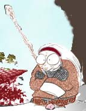

| Ranma Saotome is half boy half girl. How is that possible you ask? Well, when he is splashed with hot water, he turns into a boy. When he is splashed with cold water, he turns into a girl. How the did all this water-splashin' occur? Well, Genma Saotome took Ranma training at the Jusenkyo Springs after he promised Nodoka Saotome (Ranma's Mother) to make Ranma a MAN. Then as they were training, Ranma knocked Genma into "Spring of Drowned Panda", and he turned into a panda. The Genma-Panda was so angry that he knocked Ranma into "Spring of Drowned Girl", and Ranma turned into a girl. There's the basic story. Ranma then is told that he is to marry any of the 3 sisters of the Tendo Family to carry on the name and become Anything-Goes-Martial Arts masters. When Ranma appeared, he was in girl form, and it was all confused and all, until Genma explained it to Soun Tendo and they arranged that Ranma was to marry Akane Tendo. |
| Akane Tendo is like a time bomb. If you get her angry and "ticked" off, she'll blow up at you. If you treat her nicely she can be very sweet and caring. Ranma Saotome (but he doesn't admit it), Ryoga Hibiki, Tatewaki Kuno, Gosunkugi and a few other minor characters are in love with her. Akane has the skills of a deadly cook...meaning, she can't cook a decent meal without any mishaps. Akane can always be depended on to be there for you. Whether it's Ranma turned into a girl and needs hot water, she'll be there with a kettle boiling! Of course, her cuteness factor and her complex personality makes her one of the best-loved characters! Akane is the heir to the Tendo Dojo (after she marries Ranma of course, then she can gain possession of the whole dojo). Akane met Ranma in the TV Series, Episode 1. The whole Tendo family was eagerly awaiting the arrival of Mr.Tendo's great friend - Genma Saotome with his son Ranma. Turns out after all confusion that Ranma is half girl and half guy. |
| Genma is of course Ranma's father and mentor, more than that he is a fool. Ranma would not be in the predicament he is in if not for Genma. So, we should be grateful to him for having made such a hilarious mess of poor Ranma's life! ^_^ It was Genma's decision to take baby Ranma away from his wife in order to make a "real man" out of him, making a stupid pledge to commit seppuku (which is a japanese word for suicide that warriors use when they've failed at something) together with Ranma should he fail to fulfill this goal. Then he foolishly took Ranma to train at the Jusenkyo Springs and we know what happened there... During his travels he also engaged Ranma to goodness knows how many girls, without Ranma's prior knowledge or consent of course. On one occasion he engaged baby Ranma to a baby girl named Kaori in exchange for a fish and one bowl of noodles...And he tossed in the pickles too! Genma's curse from the Jusenkyo Springs is that he turns into a Panda every time he is splashed with cold water, he doesn't seem to mind this very much and often he will deliberately transform as a refuge to get away from his responsibilities. |
| Ryoga Hibiki is Ranma Saotome's childhood "friend". He's always been rivals with Ranma, trying to beat him in martial arts. Ryoga even went to Cologne. She taught him an attack that old miners used to break rocks. The catch? The attack for breaking rocks doesn't work on the human body. It doesn't break the human body into pieces like it does to the rocks. Ryoga trained long and hard to learn it. Ryoga also dislikes Ranma for a few other reasons. Ranma has Akane for his fiancee, and Ryoga loves Akane. (One of Akane's many admirers)..the other reason is that when Ranma was in China training and he fell into the " Jusenkyo Spring of Drowned Girl ", he changed into a girl... but while Ranma was there training with his FATHER Genma, he knocked Ryoga into the " Jusenkyo Spring of Drowned Piglet ". So Ryoga finds out later it's Ranma, and Ryoga hates him for that too. The good point about being a pig in Ryoga's case is that Akane loves P-Chan (A nickname given to Ryoga by Akane after he's changed into a pig). |
 |
shampoo....the beautiful chinese Amazon! She is tough as a character, but not as powerful as Ranma or Akane, I think. She can really wield the bonbori. Her cutie-pie-chinese accent is what hooks most people as being the best character of all. Shampoo is undoubtedly strong! She used to be the best fighter in the Amazon village, having beaten out everyone that challenged her. Then came along Ranma (again), and he was in his girl form while he beat Shampoo in the contest to win some food as the first prize for the fighting competition. Shampoo gives Ranma the "Kiss of Death" vowing to track him down to the ends of the earth and to kill her. When she finally catches up with Ranma, she learns that he's a GUY, so she changes her rule and vows to MARRY him instead of kill him. Somewhere along the line, Shampoo went back to China, and Cologne (her great-grandmother) was disappointed in her, and started to train Shampoo all over again because Shampoo failed to kill Ranma-Girl type. Shampoo then is knocked into the " Jusenkyo Spring of Drowned Cat ". |
|  | In Ranma's words, Cologne is a "3,000 year old ghoul......" Cologne is Shampoo's great-grandmother who is somewhat psychic. She wants Shampoo to marry Ranma, so she calls him "son-in-law". Cologne is very experienced and she has taught Ranma many techniques to use in his fights against others that are stronger or others that have unique attacks that seem impossible to defeat. Cologne was also Happosai's SWEETHEART way back when ...a few hundred years, a few thousand years, who knows?!?. Cologne is not only an amazing martial artist who seems to know more ancient secrets of the martial arts than anybody, she is also very bright. She often used clever schemes toward attaining the goal (ie. to get Ranma to marry Shampoo). Her schemes always fail because of Ranma's resoucefullness and Akane's always dependable aid. |
| Yet another lovable character. In spite of her boyish demeanor Ukyou is the "nicest" of Ranma's suitors, she helps him more than hinder him and seldom cause any trouble directly. Of course she is after Ranma too, but she never resort to dirty trickery and even manages to be on friendly terms with Akane. Ukyou appears to be one of the most intelligent and reasonable girl in the series, she even has her own okonomiyaki (Japanese pancake) restaurant. Her fighting technique is based on okonomiyaki cooking, the chief weapon being a giant spatula that she seems to have within reach at all times. |
| Another lovable oaf, master of concealed weapons. Mousse - like Shampoo - is from China, he loves Shampoo, who has never shown any interest in him, especially as she beat him in a fight when they were little kids. Mousse has very poor eyesight, but for some reasons, often walks around without wearing his glasses. He would then converse with lamp posts, trees, dogs or anything in front of him thinking they are people. This is very tendency led him to walk right into a Jusenkyo spring which turned him in to a duck! |
| He is a very powerful martial artist, on par with Cologne and far above Ranma's level, but this is not apparent when he's not REALLY trying. He's ALSO Genma and Soun's sensei in the martial arts. Happosai makes his living as a pervert extraordinaire, dimunitive old lech, overall nuisance and a bane to all women. Tied up and sealed in a barrel ringed with dynamite, thrown into a deep, dark mountain cave and sealed inside by a huge boulder with spirit-wards draped over it, Happosai was thought to be disposed of forever, and ever. Alas, for all of Genma and Soun's dedicated efforts to get rid of their master, old Happosai bounced back, sly as ever and not even changed a whit from what he had been before his incarceration. And worse, he has taken on Ranma as his pupil in the martial arts! With some side training in the art of stealing a panty and in the skill of peeking into a girls' locker room. And even worse. He has taken a liking to Ranma's FEMALE side and tries constantly to get her to model a bra for him! Happosai carries a pipe with him, which he often uses in the most ridiculous ways...such as hooking the opponent's arm with the crook of it and hurling the unfortunate victim at least fifty feet STRAIGHT UP into the air with no more than a flick of his wrist. Not bad for a little old man who can barely reach Ranma's kneecaps in height. Taken as he is, Happosai is a great supporting character, and really, really good for laughs. |